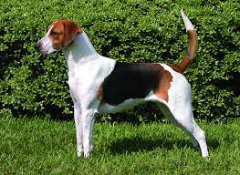

Overview
Foxhounds are good-natured, low-maintenance hounds who get on well with kids, dogs, even cats, but come with special considerations for prospective owners. They are closely associated with Revolutionary heroes and the rolling estates of old Virginia. American Foxhounds are sleek, rangy hunters known for their speed, endurance, and work ethic. You can tell the American Foxhound apart from their British cousin the English Foxhound by length of leg'¿the American's legs are longer and more finely boned'¿and by the American's slightly arched loin (back end). American Foxhounds have large, soft eyes with an expression described as gentle and pleading. So far, so good. But Foxhounds come with special considerations. They need lots of exercise or they can get depressed and destructive. A Foxhound's single-minded prey drive must be managed. Their loud bawling is melodious to hound lovers but can be a nuisance to neighbors, and training and housebreaking these independent souls can be a steep challenge for novice owners.Foxhounds are good-natured, low-maintenance hounds who get on well with kids, dogs, even cats, but come with special considerations for prospective owners. They are closely associated with Revolutionary heroes and the estates of old Virginia.
Characteristics
- easygoing and amiable.
- stubborn and independent
- enacity, intelligence, and independence.
- Energetic
Care
Aim for at least two hours per day of exercise for an English foxhound. This dog loves to run and explore outdoors. But it’s important to keep it on a leash or in a securely fenced area; otherwise it can quickly run off chasing perceived prey. Long walks, hikes, running, and cycling all are ideal activities to get some of a foxhound's energy out. Plus, dog sports, such as agility and tracking, can provide mental stimulation as well as physical activity.Brush your dog weekly to remove loose fur and distribute skin oils. Expect periods of higher shedding, often in the spring and fall as the weather changes, during which you’ll have to brush more frequently to keep up with the loose fur. Bathe your foxhound every month or so, depending on how dirty it gets. And see whether its ears need cleaning at least weekly. Also, make sure to dry the ears well anytime they get wet. Trim your dog’s nails roughly once a month. And aim to brush its teeth every day with a canine toothpaste.